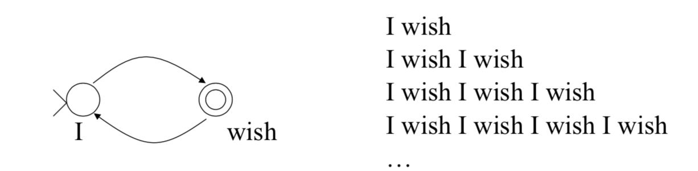
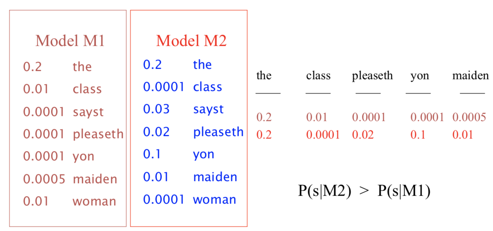
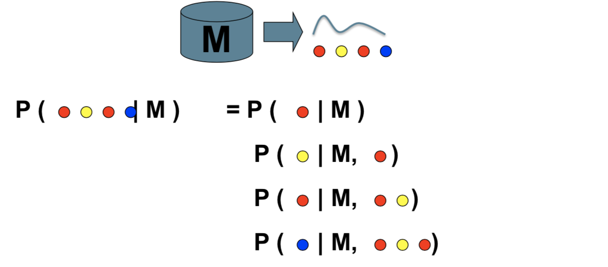
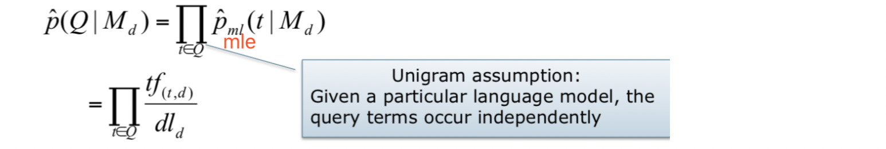
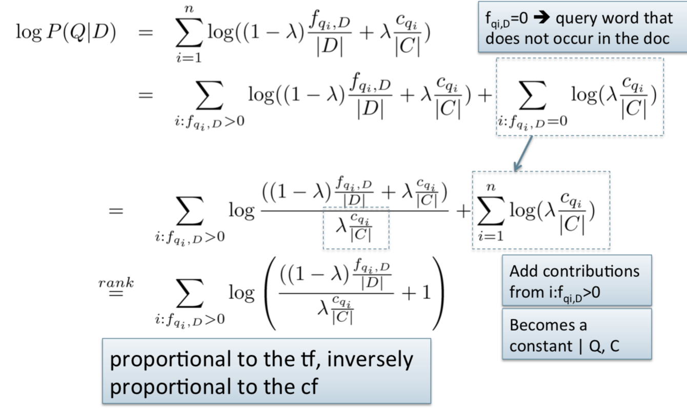

Formal Language Model
- Traditional generative model: generates strings
- Finite state machines or regular grammars, etc.
- Example:

Stochastic Language Models
- Models probability of generating strings in the language (commonly all strings over alphabet ∑)

- A statistical model for generating text
- Probability distribution over strings in a given language

-
Unigram and higher-order models

Using Language Models in IR
-
Treat each document as the basis for a model (e.g., unigram sufficient statistics)
-
Rank document d based on P(d | q)
-
P(d|q)=P(q|d) x P(d) / P(q)
- P(q) is the same for all documents, so ignore
- P(d) [the prior] is o}en treated as the same for all d, but we could use criteria like authority, length, genre
- P(q |d) is the probability of q given d’s model
-
Language Modeling Approaches
- Attempt to model query generation process
- Documents are ranked by the probability that a query would be observed as a random sample from the respective document model
- Multinomial approach

MLE
-
MLE: Maximum Likelihood Estimation
-
Ranking formula : p(Q,d)= p(d) p(Q|d) ≈ p(d)p(Q|Md )
-
The probability of producing the query given the language model of
document d using MLE is:
- Md : language model of document d
- tf(t,d) : raw tf of term t in document d
- dld : total number of tokens in document d
Insufficient data
-
Zero probability: p( t | Md ) = 0
- May not wish to assign a probability of zero to a document that is missing one or more of the query terms
-
General approach
- A non-occurring term is possible, but no more likely than would be expected by chance in the collection.
- If tf(t,d) =0 , p(t|Md) = cf t/ cs
- cft: raw count of term t in the collection
- cs : raw collection size(total number of tokens in the collection)
How to avoid 0?
Background model
- Jelinek-Mercer method
- Md=> local estimator
- Mc=> global estimator (collection/background)
- Why smoothing is not a good idea?
- if 1k words are not occur in current doc, they will all be assigned to the same valueλ, but in mixture model we use the global prob.
Relationship to idf
